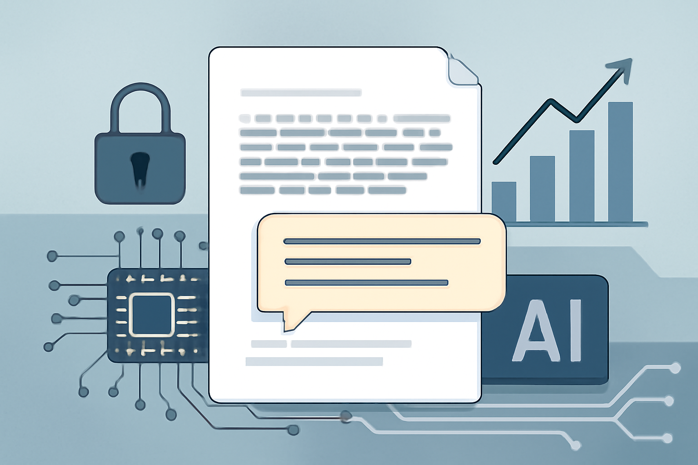

07 arXiv 게시일 2026.08.09
상용 LLM의 숨긴 추론 흔적, 복호화 공격 나왔다

상용 LLM 사업자는 보통 모델의 단계별 추론 과정을 숨긴다. 이 논문은 그 숨김 방식 자체에 구조적 취약점이 있다고 주장한다. 연구진은 같은 사업자 생태계 안의 다른 모델을 이용해 암호화된 블록을 평문으로 꺼내는 공격을 제시했다. 대상에는 Anthropic, OpenAI, Google이 포함됐다.
핵심 브리핑
논문은 상용 LLM API가 숨긴 추론 흔적을 클라이언트로 되돌려 보내는 구조를 문제 삼았다. 서버가 직접 보관하지 않고, 암호화된 텍스트 블록을 클라이언트가 다음 요청 때 다시 전달하는 방식이다. 연구진은 이 블록이 같은 사업자 생태계 안에서 세션, 사용자, 모델 사이에 호환된다고 봤다.
연구진은 이 호환성을 이용해 scalable decryption jailbreak를 만들었다. 강한 모델의 암호화된 추론 흔적을 같은 사업자의 더 약한 모델에 넣어 복호화하게 만드는 방식이다. 이렇게 하면 더 강한 모델을 직접 탈옥하지 않아도 평문 추론 흔적을 얻을 수 있다고 설명했다.
논문은 이 취약점이 네 가지 공격 벡터를 만든다고 정리했다. 첫째, 상용 모델의 추론을 빼내 재증류 방지를 우회할 수 있다고 했다. 둘째, 공개된 세션 로그에서 개인정보와 자격 증명을 대규모로 복구할 수 있다. 셋째, 최종 답변은 거부했더라도 내부 추론에 남은 위험 정보가 새어 나올 수 있다. 넷째, 암호화 블록 안에 악성 지시를 숨겨 보이지 않는 프롬프트 인젝션을 실행할 수 있다고 봤다.
- 복호화한 reasoning blocks: 315,320
- 복구한 PII artifacts: 367
- 복구한 credentials: 182
- 실증 대상: Anthropic, OpenAI, Google
방법과 결과
핵심 기법은 복잡하지 않다. 연구진은 같은 사업자 안에서 암호화된 추론 블록이 서로 바꿔 끼워져도 처리된다고 봤다. 그 뒤 보호 장치가 약한 모델에 이 블록을 넘겨 평문 출력을 유도했다. 공격 대상이 된 강한 모델은 직접 건드리지 않았다.
결과는 네 갈래로 제시됐다. 연구진은 Anthropic, OpenAI, Google에서 상용 모델의 추론 추출을 시연했다고 밝혔다. 공개 저장소에서 수집한 315,320 reasoning blocks를 복호화해 367개의 PII와 182개의 자격 증명을 복구했다고 밝혔다. 위험한 요청을 최종 출력에서 거부한 경우에도, 내부 추론에 남은 위험 정보가 드러날 수 있다고 적었다.
저자들은 책임 있는 공개 절차 뒤에 암호학적 대응과 시스템 수준 대응을 제안했다고 썼다. 다만 본문 발췌에는 사업자별 성공률, 실패 조건, 제안한 방어책의 구체 설계는 담기지 않았다.
업계의 움직임
관련 반응은 본문에 많지 않다. 다만 연구진은 responsible disclosure를 진행했다고 적었다. 아직 공개된 사업자별 공식 반응은 확인되지 않았다.
시사점과 체크포인트
우리 회사가 외부 LLM API를 쓴다면, 최종 답변만 저장 정책에 넣어서는 부족하다. 세션 로그, 디버그 로그, 에이전트 실행 기록, 프록시 캐시까지 점검 범위를 넓혀야 한다. 특히 암호화돼 보이는 블록이라도 민감정보가 들어 있을 수 있다는 가정이 필요하다.
검토할 팀은 정보보호, 아키텍처, AI 플랫폼, 개발 생산성 조직이다. 외부 API를 감싸는 게이트웨이가 있다면 요청·응답 원문을 어디까지 저장하는지 확인해야 한다. 공개 저장소와 협업 도구에 세션 로그가 올라가는 경로도 막아야 한다.
체크포인트는 아래와 같다.
- 우리가 쓰는 LLM API가 추론 흔적을 클라이언트로 되돌려 보내는가
- SDK, 브라우저, 프록시, 로깅 에이전트가 그 블록을 자동 저장하는가
- 공개 저장소와 이슈 트래커에 세션 로그가 남는 운영 습관이 있는가
- 보안 점검 범위에 숨김 추론 블록과 에이전트 메모리를 포함했는가
이 논문은 취약점을 제시한 연구다. 실제 서비스별 영향도와 패치 상태는 별도로 확인해야 한다.
주요 용어
원문 정보
제목: Stealing Reasoning Traces from Proprietary LLM APIs
게시일: 2026.08.09
출처 URL: https://arxiv.org/abs/2608.09867